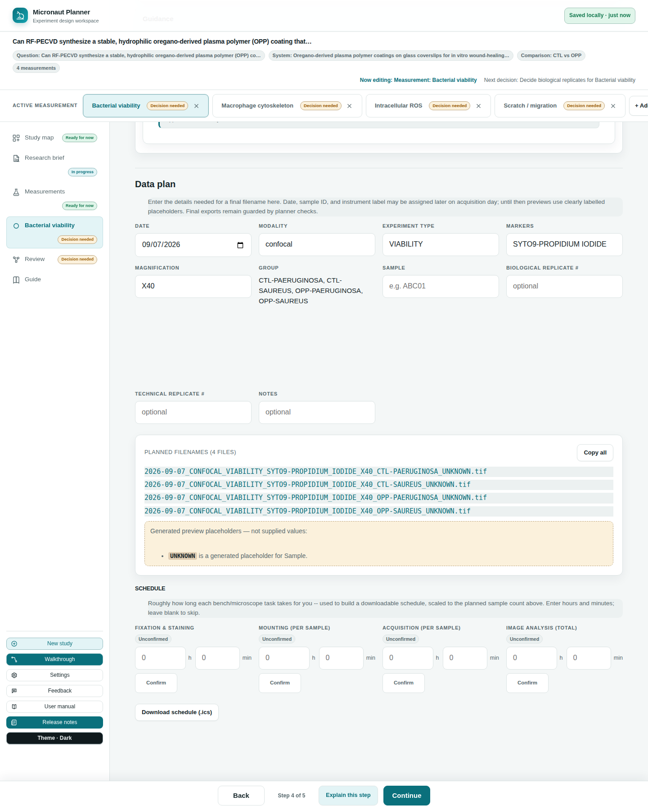

Chapter 8
Validation & Naming
How Micronaut turns your measurement's details into a consistent filename, what the file-naming rules actually check, and how to read (and fix) the warnings it shows you.
What you'll be able to do
- Understand the filename template and which parts of it are required versus optional
- Fill in the naming fields on a measurement's Data plan section
- Read the difference between an error and a warning in the issues list
- Fix the most common naming complaints: an invalid sample ID, magnification, notes, or an unrecognized marker
- Know what happens automatically when a name would collide with a reserved Windows filename, or run too long
- Understand what "configuration" means here — a fixed set of rules every study currently uses, not a per-lab settings screen

The filename template
Every planned filename in Micronaut is built from one template, applied the same way to every measurement in every study:
{date}_{modality}_{exptype}_{markers}_{magnification}_{group}_{sample}_{biorep}_{techrep}_{notes}{ext} |
The first five tokens — date, modality, experiment type, markers, and magnification — are the part every file from this measurement shares, sometimes called the base name. The remaining tokens are what tells two files from the same measurement apart: which group, which sample, which biological or technical replicate, and any free-text notes.
- group, biorep, techrep, and notes are optional. If your design has no groups, or your modality doesn't use technical replicates (common for SEM/TEM or Raman), that token is simply dropped from the name — you never get a placeholder sitting in for something you don't have.
- Every other token is required. Until you fill it in, the filename preview shows a clearly generated placeholder (like
UNKNOWNfor modality, experiment type, markers, or magnification, orUNKNOWNfor a date you have not set yet) so you can still see the shape of the name — see Reading the preview below.
💡 Tip. The Group box on Data plan is read-only. Groups are typed in exactly one place — the measurement's Samples & design section — and Data plan just shows what that section already decided, so the group in a planned filename can never disagree with the group you actually set up.
Filling in the naming fields
Open a measurement and scroll to its Data plan section. Each box maps to one token in the template:
| Field | What it means |
|---|---|
| Date | The date you acquired the images. Starts pre-filled with today's date until a real acquisition date is entered. |
| Modality | The type of microscope or imaging method — confocal, widefield, STED, and so on. |
| Experiment type | A short label for what kind of experiment this is, so related files group together (e.g. "CT" for a control). |
| Markers | Stains, dyes, or fluorescent proteins imaged — or, for SEM/TEM with no fluorescence, your contrast agent (e.g. uranyl acetate) instead. |
| Magnification | The zoom level or objective used, like 40x or 100x. |
| Sample | A unique ID for this specimen or animal, so two files never get mixed up. |
| Biological replicate # / Technical replicate # | Which repeat this is — a different animal/dish/sample (biological), or a repeat measurement of the same one (technical). Leave blank if it doesn't apply. |
| Notes | Anything else worth remembering about this specific file. Optional. |
As you type, the Planned filename(s) list below the fields updates immediately — one row per file the measurement's design calls for, or a single row if there's no design at all. A Copy all (or Copy filename, for just one) button copies the whole list, one name per line, ready to paste into a lab notebook or spreadsheet column.
🔍 Why it works this way. The naming fields and the planned-name list are two views of the same in-memory snapshot, so the table can never show a name that disagrees with what you just typed — even before anything is saved.
Reading generated placeholders
Below the planned-name list, a short status line tells you whether every required value has actually been supplied, or whether the preview is still filling in gaps on your behalf:
- "Every required filename value in this preview was supplied" — nothing is a placeholder any more.
- "Generated preview placeholders — not supplied values" followed by a list — each entry names a field (e.g.
UNKNOWN is a generated placeholder for Modality) that is still using the naming template's built-in default, not something you typed.
These placeholders keep the filename preview readable at every stage, but they aren't real answers — they're exactly what the Review step's readiness check looks for when it flags a measurement as "needs review." See Planner checks.
The naming rules ("configuration")
Micronaut checks each typed value against a fixed set of format rules — the same rules for every study, since there's currently no in-app screen to change them per lab:
| Field | Rule | Example that passes |
|---|---|---|
| Sample | Three letters followed by two digits | ABC01, XYZ12 |
| Magnification | The letter X followed by 2–3 digits | X40, X100 |
| Notes | Letters, numbers, underscores and hyphens only — no spaces | rescan-1 |
| Experiment type | Unrestricted by default — any value is accepted | — |
| Markers | Unrestricted by default; an unrecognized marker is a warning, not an error, when a list of approved markers exists | — |
Because the experiment-type and marker allow-lists are empty by default, nothing in either field is currently rejected on those grounds — Micronaut ships unrestricted and only enforces the sample, magnification, and notes shapes above. The one exception: the naming template's own default placeholder (UNKNOWN, for example) is never flagged as invalid — only a value you actually typed is checked.
⚠️ Careful. An unknown marker is flagged, not blocked — it's a warning you can act on or ignore, not a wall stopping you from typing what you actually used.
Reading the issues list
Below the planned-name list, an issues list shows anything the rules above caught — one line per issue, in the form field: message. Each message is written in plain terms first (what a valid value looks like) with the technical pattern only mentioned afterward for reference. Two severities appear:
- Error — a value you typed doesn't match the expected shape (an invalid sample ID, magnification, or notes value). This blocks the study from being marked "ready" on Review.
- Warning — something worth a second look but not necessarily wrong: an unrecognized marker, or a filename that would make the full path too long for classic Windows path limits (260 characters). Warnings never block anything on their own — a long path may still work fine (a modern long-path setting, a non-Windows filesystem, WSL), so Micronaut surfaces the risk rather than silently truncating your filename.
🧪 Try it. Type ab1 into the Sample box on any measurement's Data plan. You'll see an error explaining the expected shape (three letters, two digits) rather than a bare regular expression. Fix it to something like ABC01 and watch the issue disappear immediately.
Reserved names and long paths — handled automatically
Two filesystem quirks are handled for you, without any warning cluttering the issues list:
- Reserved Windows device names. Windows treats certain filenames —
CON,PRN,AUX,NUL,COM1–COM9,LPT1–LPT9— as unusable, even with an extension attached (CON.tifis just as broken as bareCON). If your naming fields would ever produce one of these as the filename's stem, Micronaut silently appends_FILEso the name stays usable and still recognizably close to what the template produced. - Compound extensions. A file ending in
.ome.tifor.ome.tiffkeeps that whole compound extension rather than being cut down to just.tif— the.omepart is meaningful (it marks an OME-TIFF) and is never silently dropped.
Check yourself
You leave Biological replicate # and Technical replicate # blank on a SEM measurement that has no technical replicates. Does the filename get a placeholder for them?
No — biorep, techrep, group, and notes are optional tokens. An unanswered optional field is simply dropped from the filename, not padded with a placeholder.
You type a marker that isn't on any approved list. Does this stop you from planning your filenames?
No. Unless a lab-specific approved-marker list exists (Micronaut ships with none by default), the marker is accepted outright; even when a list does exist, an unrecognized marker is a warning by default, not a blocking error.
Your planned filename would produce the stem "COM1". What happens?
Micronaut automatically repairs it to "COM1_FILE" so the file can actually be created on Windows — you don't need to notice or fix this yourself.